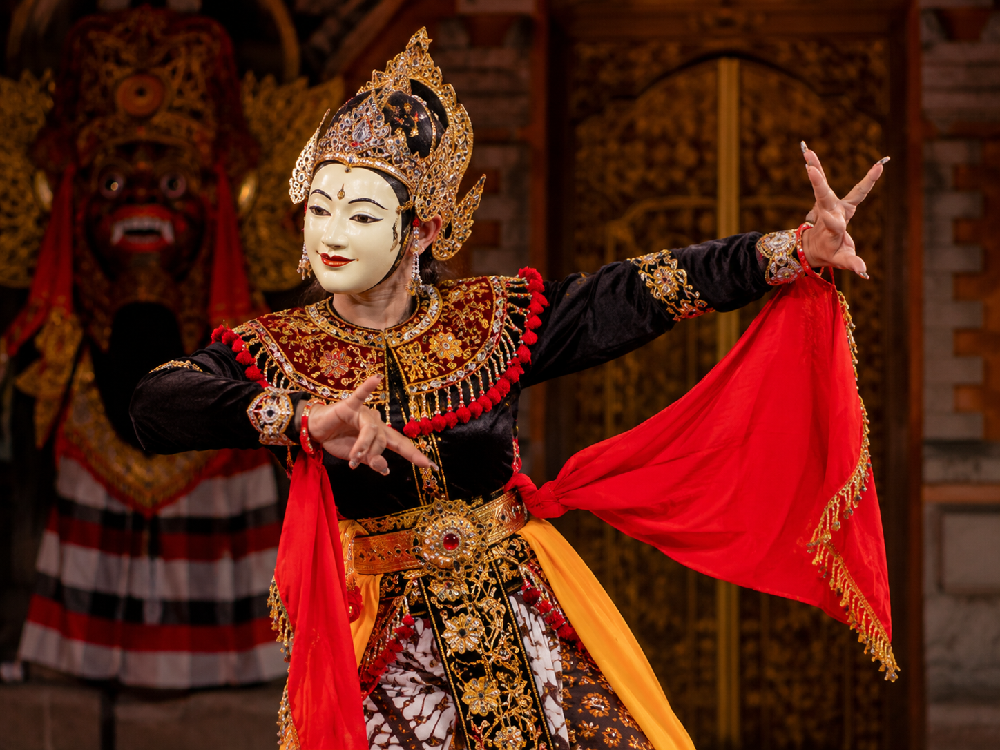
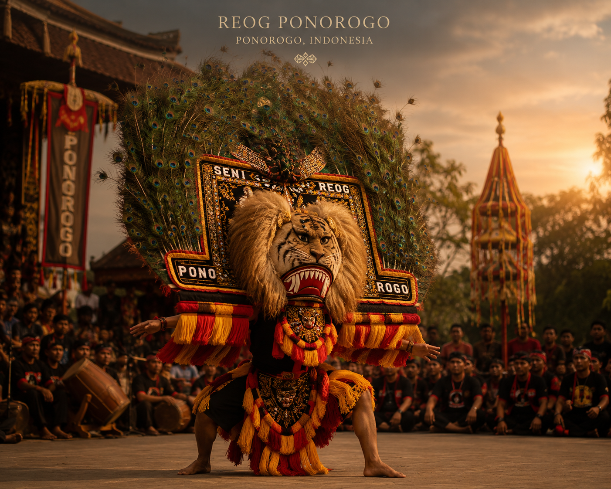
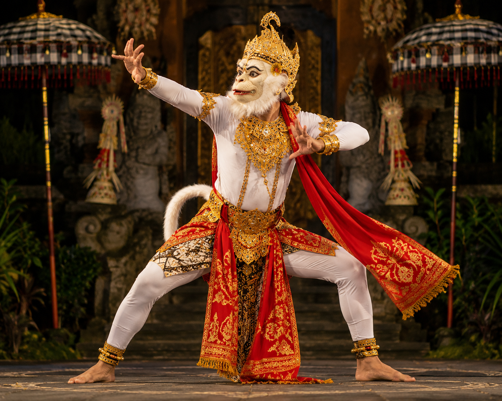

Mengenal sejarah dan kekayaan budaya Nusantara.
Tari Kecak merupakan tarian tradisional khas Bali yang berasal dari seni ritual sakral Sanghyang. Tarian ini mulai berkembang pada tahun 1930-an dan dipadukan dengan kisah Ramayana oleh seniman Bali bersama pelukis Jerman bernama Walter Spies. Tari Kecak dikenal dengan ciri khas puluhan penari laki-laki yang duduk melingkar sambil meneriakkan suara “cak, cak, cak” secara berirama tanpa menggunakan alat musik. Tarian ini menggambarkan perjuangan Rama dalam menyelamatkan Dewi Sinta dari Rahwana dan hingga kini menjadi salah satu ikon budaya Indonesia yang terkenal di dunia.

Tari Topeng merupakan tarian tradisional Indonesia yang menggunakan topeng sebagai ciri khas utama dalam pertunjukannya. Tarian ini berkembang di berbagai daerah seperti Cirebon, Bali, dan Malang dengan karakter serta cerita yang berbeda-beda. Dalam Tari Topeng, penari menggunakan berbagai jenis topeng untuk menggambarkan sifat tokoh tertentu, seperti bijaksana, lembut, hingga gagah berani. Tarian ini biasanya menceritakan kisah kerajaan, legenda, atau kehidupan masyarakat dan menjadi bagian penting dari warisan budaya Indonesia yang masih dilestarikan hingga sekarang.

Reog Ponorogo merupakan kesenian tradisional yang berasal dari Ponorogo dan sudah ada sejak zaman Kerajaan Majapahit. Kesenian ini menceritakan perjuangan Raja Klono Sewandono yang ingin mempersunting Putri Songgolangit dari Kerajaan Kediri. Reog dikenal dengan topeng kepala singa besar yang dihiasi bulu merak, disebut Singo Barong, yang dimainkan dengan penuh kekuatan dan keberanian. Selain menjadi hiburan rakyat, Reog Ponorogo juga memiliki makna tentang kepemimpinan, keberanian, dan semangat masyarakat Jawa Timur dalam menjaga tradisi budaya leluhur.

Tari Hanoman merupakan tarian tradisional yang terinspirasi dari kisah Ramayana dan berkembang kuat di budaya Jawa serta Bali. Tarian ini menggambarkan tokoh Hanoman, seekor kera putih yang dikenal setia, pemberani, dan memiliki kekuatan luar biasa dalam membantu Rama menyelamatkan Dewi Sinta dari Rahwana. Tari Hanoman biasanya ditampilkan dalam pertunjukan sendratari Ramayana dengan gerakan lincah, enerjik, dan penuh ekspresi khas seekor kera. Hingga sekarang, Tari Hanoman menjadi salah satu kesenian tradisional yang melambangkan keberanian, kesetiaan, dan semangat perjuangan dalam budaya Indonesia.